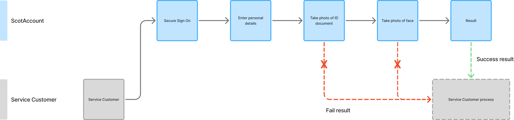
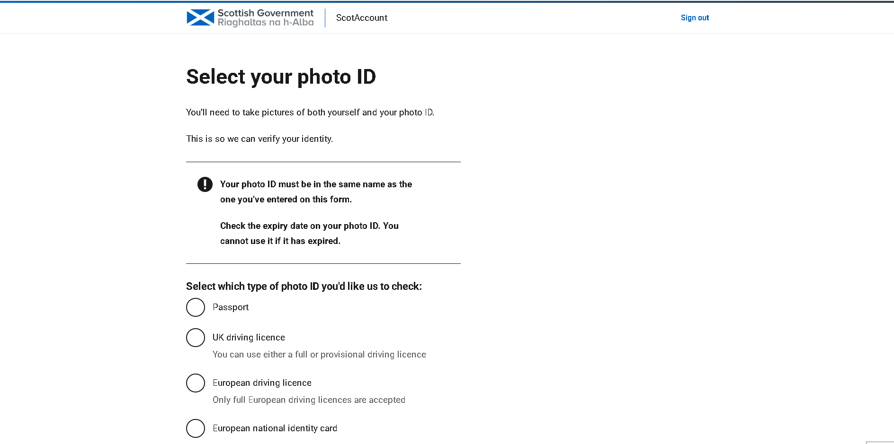
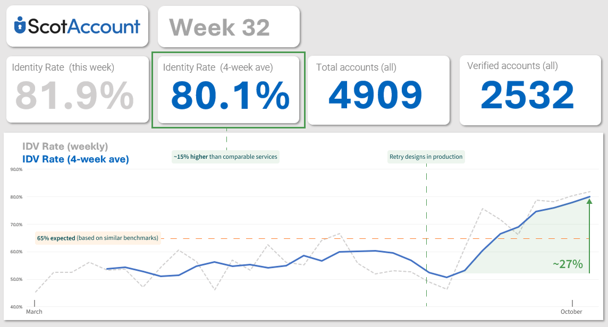

The Scottish Government
ScotAccount Beta
ScotAccount is a single login and digital identity verification platform that is transforming the way half a million Scottish citizens access public services.
I worked with a cross functional team of over 20 consultants and in-house specialists to design and deliver ScotAccount during its Beta phase.
- My Responsibilities
- Interaction Design, Service Design
- Duration
- ~18 Months

Context
The cost of fragmented public services
Before The Scottish Government introduced ScotAccount, its flagship digital service, Scotland's digital landscape had become siloed and disconnected, with each public sector organisation wasting time and money managing their own independent back-office processes.
This landscape not only led to duplicated effort and infrastructure across the public sector, it was a repetitive burden for citizens, who had to navigate inconsistent and inaccessible processes every time they tried to access public services or prove their identity.
With complexity and inconsistency compounding, The Scottish Government partnered with Scott Logic to deliver ScotAccount, one of their priority common platforms.
The challenge
ScotAccount aimed to solve these problems by providing a single bridge between citizens and various public sector organisations. We needed to design a service-agnostic system that would let users log in to these organisations, verify their identity and store those verified details for reuse.
The core challenge of this project was realising this vision in a way that balanced accessible User Centred Design with technical, ethical and security constraints.
Without ScotAccount
Every service requires its own identity check
With ScotAccount
Verifying and saving identity data once unlocks multiple public sector services
Our first major risk
When I joined the ScotAccount project, we were preparing to go live with our first partner organisation, Disclosure Scotland. It was vital that this initial rollout demonstrated the value of digitising the identity verification process, as failure to do so would deter other organisations from onboarding.
ScotAccount's vision to become shared national infrastructure relied on us reaching a critical mass in terms of adoption, otherwise inconsistency and duplication would remain a widespread problem.
The User Centred Design team and I worked on design solutions that focused initially on driving this rate of adoption - starting with the identity verification pass rate.
Understanding the problem space
When I joined the project, a basic foundation for the primary identity verification method was already in place - we hadn't gone live, but we did have a working build that our User Centred Design team were planning to test over several rounds of User Research.
We had a dedicated team of User Researchers who ran the sessions themselves, but I played a role throughout these rounds by producing design prototypes to test various assumptions as and when appropriate. I was present for and contributed to around 25 rounds of research throughout my time on the project, each with several interviews, usability tests, sensemaking and "Insights to Action" sessions afterwards.
The existing core journey
At this stage, the primary verification method was done using biometrics, with the user providing a few details and taking live photos of an ID document and their face. Using two third party systems, the system then used user input to match their identity records to the specific user interacting with the service.
This method was deemed by Product to be the most sensible starting place, as it generally sees the highest pass rates for most people. It's also more secure than other methods like knowledge based verification.

Honing in on the sticking points
Taking photos was overwhelmingly the most problematic part of the biometric process for test participants. This was due to a number of reasons, namely:
- Inability to provide a suitable document
- Difficulty taking photos using a desktop machine
- Inability to use a QR code to transfer to a mobile device
- Camera permissions
- Lighting conditions
- Difficulty interpreting error messaging from our third party image capture technology

This image is taken from a sensemaking board the team and I used after the research. It clearly demonstrates the concentration of talking points (mostly negative) on the image capture part of the flow
Key insights
Participant 1:
Participant used a blue ring binder as a dark background when taking photos of their ID
Participant 2:
Participant struggled to access the camera on their laptop
Participant 3:
Participant incorrectly anticipated that they would need to find a saved passport photo from their computer
Participant 4:
Photo capture timed out twice
The difference between what participants say and do

Fascinatingly, when asked for their subjective opinion on the session after the fact, every participant said that they found the experience relatively easy - even one participant that got stuck on the first photo and needed to borrow a phone from the User Researcher to complete the task. I think this told us a lot about bias and self-reported evidence.
Fixing the image capture process
I worked with our development team to plug some gaps in the existing flow, for example: providing suitable routing for situations where the user's device can't detect a camera. I also worked with our Content Designer to adjust some messaging, to ensure users had what they needed before they got to the image capture stage.
.png)
.png)
New insights from the live service
Going live with Disclosure meant that real analytics data began to trickle down from production. This complemented our ongoing qualitative research activities by providing hard performance numbers, pinpointing where we were seeing specific failure points that we should explore further.
Crucially, we were seeing an initial identity verification pass rate of ~53%, which was a considerable amount lower than the ~65% benchmark hit by similar national identity services.
Designing for the largest failure points
The data also told us the main reasons legitimate users were failing to pass the verification process. These were:
- Expired ID document
- Name entered doesn't match ID document
- Poor image quality
I worked with another Interaction Designer to produce a set of 'retry scenario' designs that aimed to get more users through the process successfully.


The impact of retry scenario designs
These design changes drove pass rates from 53% to 80%. Critically, performance remained consistently above 76% for months after implementation, demonstrating this was a fundamental UX improvement, not a temporary spike.

Designing for trust and accessibility at scale
Our pass rate was now stable and the system was exceeding expectation, but as we looked to scale, we needed to ensure that the service was accessible to a wider user base. We knew from our research, for example, that citizens may:
- Not have a suitable ID document at all
- Struggle to take photos due to disability
- Not have enough of a credit history for us to reliably verify their identity
As an
assistive technology user
I need
to be able to verify my identity without taking photographs
So that
I am not blocked from accessing the service I need
Alternative verification routes
I worked with a Service Designer to define new user flows that, at appropriate points, would route users to processes that were designed to work for them. Namely, this involved reshuffling the journey by adding upfront screening questions and drop off points that led to alternative methods.
.png)
.png)
Working out the logic that would lead users to each route
Routing the user towards the appropriate process: Biometric, Knowledge Based Verification or Vouching. This involved designing the seams between organisations and systems, as we used a third party supplier for the Vouching route
Where is ScotAccount now?
ScotAccount was shortlisted as one of three finalists in the 2025 Civil Service Awards' "Delivering for Citizens" category, recognising its proven value to the people of Scotland. The awards attracted 2,500 entries across all categories and featured a wide range of programmes from across the UK Public Sector.
As of 2025, around 10,000 new ScotAccounts are created weekly, and 99% of users choose to save their details for reuse. This stat speaks to the team's ability to build trust in the service, in turn driving the value it provides.